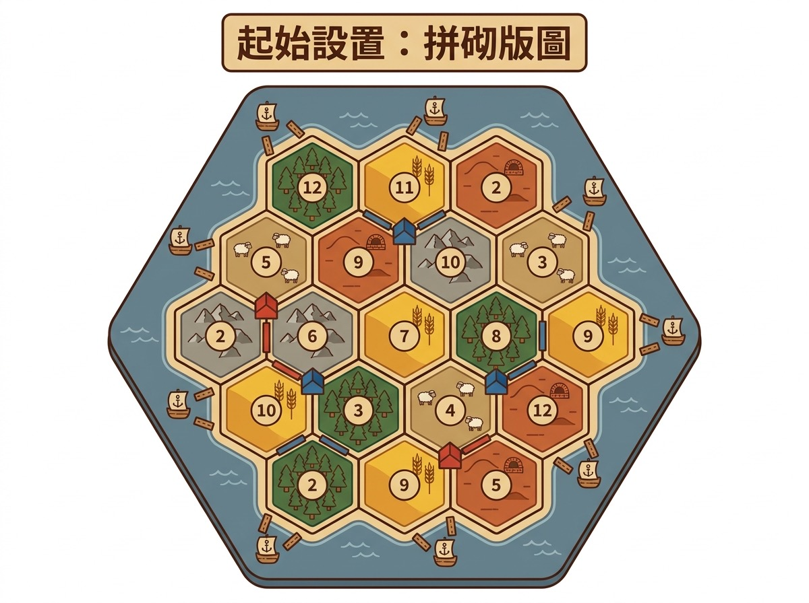
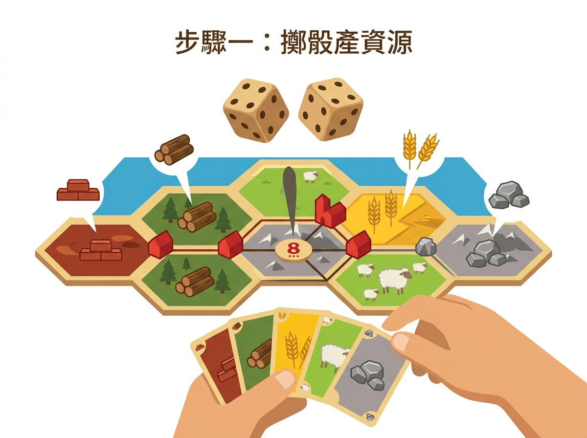
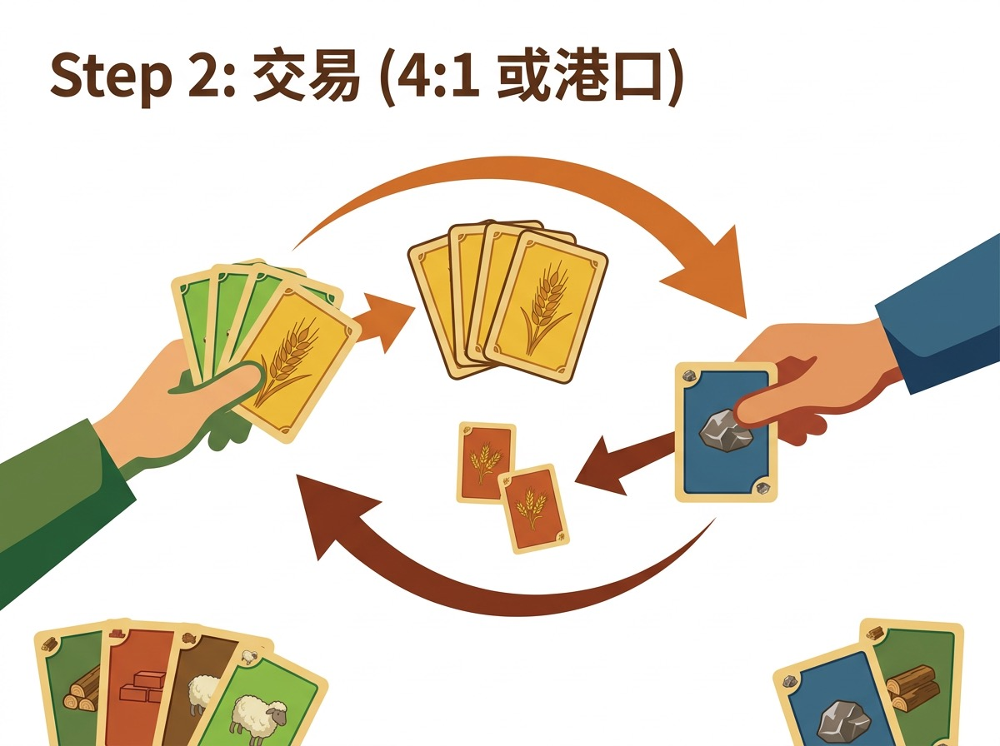
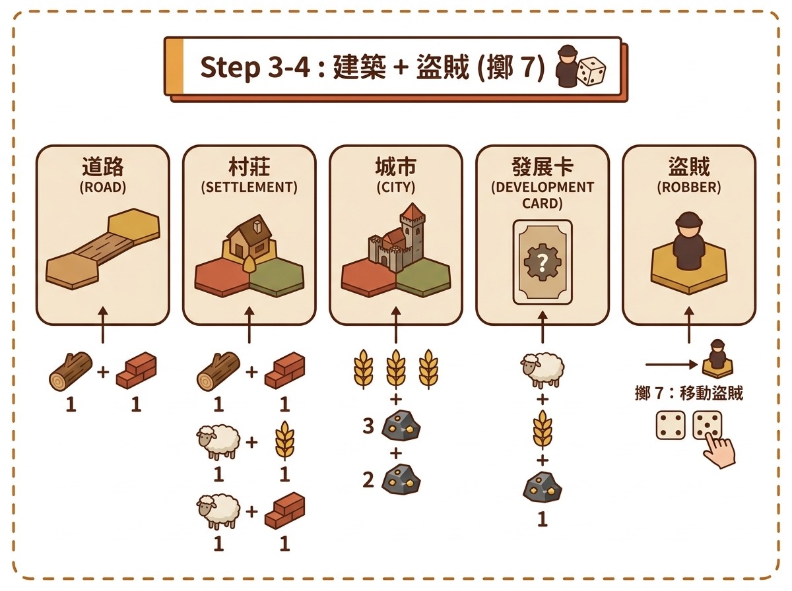

卡坦島 (Catan) — 經典德式策略始祖
出版: Kosmos / 劍領 (中文版) · 類別: 策略, 家庭, 談判

一句話總覽
經典德式策略, 島上建設道路 / 村莊 / 城市。擲骰產資源、交易、發展卡、盜賊。最先 10 分贏。中文版普及, 旺角大路貨。
玩法 step 圖




卡坦島 (Catan)
經典德式策略始祖
玩法簡介
卡坦島 (Catan) 係 1995 年 Klaus Teuber 設計嘅德式策略遊戲, 由 Kosmos 出版, 劍領代理中文版, 旺角多間店有售 (中文版最普遍, 新手友善)。遊戲背景係探索新島嶼, 玩家扮演島上定居者, 透過建設道路、村莊、城市, 賺取分數, 最先 10 分贏。
卡坦島嘅核心機制係「擲骰產資源 + 自由交易 + 建築 + 盜賊」。每個回合擲 2 個骰, 對應數字嘅地形出產資源 (木材 / 磚頭 / 羊毛 / 麥子 / 礦石), 玩家用資源建設, 缺乏資源可以同其他玩家交易, 7 點觸發盜賊。呢個 design 1995 年一出即成為 modern board game 嘅典範, 影響之後 30 年嘅德式遊戲設計。
呢個 game 適合 3-4 人, 5-6 人要擴充, 教學時間 20-30 分鐘, 一局 60-90 分鐘, 難度中等至進階。旺角最經典嘅桌遊, 中文版大路貨, 新客入門必玩。
完整流程 (Step by Step)
Step 1: 設置
隨機擺放 19 塊六角形地形板 (森林 / 牧場 / 麥田 / 山脈 / 荒地), 每塊板標一個生產數字 (2-12, 唔包 7)。每個玩家擺 2 個定居點 (settlement) 同 2 條道路 (road), 第二個定居點免費 (setup bonus)。每個定居點攞周圍 3 格地形嘅資源。
Step 2: 擲骰
每個回合由「最大軍隊」玩家先擲 2 個骰 (第 1 回合由最近 7 月 22 日生日嘅玩家擲)。擲到 7 點: 觸發「盜賊階段」, 所有玩家手上牌超過 7 張要丟一半, 擲到 7 嘅玩家可以移動盜賊到任何地形, 嗰個地形周圍定居點嘅玩家之後嗰回合唔出產資源 (但可以照收其他地形)。擲到其他數字: 對應數字嘅所有地形出產資源, 周圍有定居點嘅玩家每個定居點攞 1 個資源。
Step 3: 交易
所有玩家可以自由同其他玩家交易, 4 換 1 / 3 換 1 / 2 換 1 (視乎玩家協議), 或者用港口 (同銀行 3 換 1, 或者 2 換 1 如果有對應資源嘅港口)。新手最常犯嘅錯係「唔肯 trade」, 寧願自己慢慢儲, 結果被對手拋離。卡坦島 5 種資源互相 trade 嘅難度: 木材 / 磚頭最多, 礦石 / 麥子最少, 所以要 trade。
Step 4: 建築
每個玩家輪流做 1 個建築動作, 動作包括: (A) 起道路 (1 木材 + 1 磚頭), (B) 起定居點 (1 木材 + 1 磚頭 + 1 羊毛 + 1 麥子, 必須連接自己道路, 唔可以貼近另一個定居點), (C) 起城市 (2 麥子 + 3 礦石, 升級已有定居點), (D) 買發展卡 (1 麥子 + 1 礦石 + 1 羊毛), (E) 玩發展卡 (騎士 / 道路建設 / 壟斷 / 豐收 / 點數)。
Step 5: 發展卡運用
發展卡有 5 種: 騎士 (移動盜賊, 累積 3 個騎士 = 「最大軍隊」2 分 VP), 道路建設 (免費起 2 條道路), 壟斷 (指定 1 種資源, 所有玩家俾你 1 張), 豐收 (指定 1 種資源, 銀行俾你 2 張), 點數 (1 分 VP, 即時攞, 唔可以留)。其中「點數」係隱藏王牌, 因為對手睇唔到你 VP, 唔會知道你已經 9 分。
Step 6: 結束條件
任何玩家達到 10 分 (定居點 + 城市 + 最大道路 + 最大軍隊 + 發展卡點數) 即時贏, 遊戲結束。如果 2 個玩家同一回合達到 10 分, 進入 tiebreaker (見下)。
Step 7: 港口 (Harbor) 運用
島上 9 個港口 (5 個 3 換 1 一般港, 4 個 2 換 1 特殊港對應特定資源)。如果定居點或者城市喺港口位, 玩家可以同銀行 3 換 1 (一般) 或 2 換 1 (特殊)。高手會將定居點擺喺「2 換 1 特殊港」位, 長期 trade advantage。
Step 8: 擴充
5-6 人場要加「5-6 人擴充」, 加多 2 塊地形 + 額外道路/定居點。海上擴充 (Seafarers) 同城市 + 騎士擴充 (Cities & Knights) 係另外買, 進階客可以上 BGG 查。
戰術提示 (5+ 條)
- 「最強起手位」: 6 + 8 + 5 數字組合: 卡坦島起手 2 個定居點嘅位置決定 60% 嘅勝率。最佳組合: 第一個定居點擺喺 6 同 8 嘅交叉位 (因為 6 同 8 出產概率最高, 各 5/36), 第二個定居點擺喺 5 (4/36) + 3 種唔同資源嘅位。高手會避免擺喺 2 (1/36) 同 12 (1/36) 嘅位, 因為出產率太低。BGG 統計: 6 同 8 周圍嘅定居點比 2 同 12 周圍嘅定居點平均多 1.5 倍資源。
- 「早期長道路 > 城市」: 第三回合嘅常見錯誤: 玩家儲夠 3 礦石 + 2 麥子, 急住起城市, 但忽略咗道路擴展。卡坦島嘅道路係「擴展嘅根本」, 冇道路你唔可以起新定居點, 冇定居點你嘅資源產出有限。一個常見 strategy: 早期集中起 5-6 條道路, 先搵到第二個 6/8 數字嘅交叉位, 再起定居點。BGG 統計: 「長道路」嘅玩家勝率比「早期城市」高 20%。
- 「盜賊擺位: 擺對手最需要嘅, 唔係擺自己最弱嘅」: 新手最常犯嘅錯: 將盜賊擺喺自己最少出產嘅地形 (以為阻自己最少)。高手反過嚟: 擺喺對手最多出產嘅地形, 阻對手最多。一次盜賊擺位, 可以阻對手 2-3 回合嘅資源產出, 戰略價值極高。BGG 統計: 盜賊擺位得當嘅玩家勝率高 35%。
- 「第三回合: 2nd City vs Development Card」: 卡坦島嘅第三個回合, 玩家面對選擇: 儲夠 4 資源 (1 木材 + 1 磚頭 + 1 羊毛 + 1 麥子) 起第二個定居點, 還是買發展卡? 答案要睇你嘅位置: 如果你嘅第一個定居點已經有 3 種以上資源, 起第二個定居點 (起 2 個 city 之後資源產出翻倍) 嘅勝率比買發展卡高 30%。如果你嘅第一個定居點只有 2 種資源, 買發展卡等「點數」VP 比較穩。BGG 統計: 早期起 2nd city 嘅玩家勝率 50%, 買發展卡 35%。
- 「發展卡 1 VP 嘅隱藏王牌」: 卡坦島有 25 張發展卡, 其中 5 張係「點數」, 即係 1 VP。高手會喺遊戲尾段「靜靜雞」咁儲 1-2 張點數, 對手睇唔到你 VP, 以為佢哋領先, 結果你最後一刻攞 10 點贏。教客時要教: 點數係「隱藏分數」, 唔好太早攞, 等遊戲尾段先一次過攞, 製造 surprise win。
- 「最大軍隊 2 VP 嘅爭奪」: 「最大軍隊」要 3 個騎士卡 (2 VP), 對手有 3 個你就要 keep 住多過對手一個。新手最常見嘅錯誤: 太早玩騎士卡, 結果被對手搶咗「最大軍隊」。高手打法: 騎士卡儲住, 等對手玩到 2 個騎士時, 你先一次過玩 3 個騎士, 搶到「最大軍隊」2 VP。BGG 統計: 搶到「最大軍隊」嘅玩家勝率高 25%。
- 「港口 trade ratio 嘅運用」: 2 換 1 特殊港 (對應 1 種資源) 係長期 trade advantage。例如你有「礦石港」, 其他人要 3 礦石 換 1 任何資源, 你 2 礦石就換到, 即係慳 33% 成本。高手會將第二個定居點擺喺「2 換 1 特殊港」位, 雖然呢個位通常資源普通, 但 trade advantage 補償得到。教客時要教: 港口 = 長期 trade currency。
Tiebreaker
卡坦島官方 tiebreaker 規則 (Kosmos 1995 / 劍領中文版):
- 主規則: 10 分玩家贏。如果 2 個玩家同一回合達到 10 分, 進入 tiebreaker。
- 第一次 tiebreaker: 比較「擁有最長道路」(Longest Road) 嘅玩家勝。最長道路係 5 條或以上連續道路 (中間唔可以斷), 第一個達到嘅玩家攞 2 VP, 如果之後有人超過, 長道路就俾佢。
- 再平手 (第二次 tiebreaker): 比較「擁有最大軍隊」(Largest Army) 嘅玩家勝。最大軍隊係 3 個或以上騎士卡, 第一個達到嘅玩家攞 2 VP。
- 再平手 (第三次 tiebreaker): 比較「擁有最多城市」嘅玩家勝。城市 2 VP, 定居點 1 VP, 越多城市分越高。
- 再平手 (第四次 tiebreaker): 比較「擁有最多定居點」嘅玩家勝 (唔計城市)。
- 再平手 (第五次 tiebreaker): 比較「擁有最多道路」嘅玩家勝 (唔計長度, 只計數量)。
- 再平手 (極罕有): 兩位玩家繼續玩, 第一個攞到 11 分嘅玩家勝。
來源: 官方規則書 (Kosmos 1995, 劍領中文版 2009) page 4-5 寫「End of the Game」段落, BGG comment 確認。教客前可上 BGG: https://boardgamegeek.com/boardgame/13/catan
重要注意: 教客時要 demo 一次 tiebreaker 路徑, 因為新手最常見嘅疑問係「我同對手都 10 點, 點算?」答案係要再比 5 個條件, 唔係 share win。
客戶推介
卡坦島喺旺角嘅定位係「經典德式策略, 中文版普及, 新客入門必玩」。
- 新手 (⚠️): 教學時間長 (20-30 分鐘), 第一次玩要 demo 半局, 唔建議完全新手開枱。
- 進階 (✅✅) + 專家 (✅✅): 戰略深度高, 5 種資源管理 + 8 種建築 + 5 種發展卡, 進階客可以玩到癲。
- 家庭 (✅✅): 中文版大路貨, 跨代家庭最愛, 經典首選。
- 朋友群 (✅): 3-4 人場 ok, 旺角朋友群 4 人最常見。
- 情侶 (⚠️): 3-4 人場, 情侶 + 2 個朋友 ok, 2 人場唔可以玩 (3 人 min)。
- 2 人 (❌): 3 人 min, 2 人場唔可以。
- 6+ 人 (⚠️): 4 人 max (基本版), 5-6 人要擴充, 旺角未必有齊。
旺角新客入門, 問「我想試德式策略, 揀咩好?」, 卡坦島係標準答案 (但要 3-4 人, 教學時間長)。
客 query 對應
- 「我想試德式策略, 揀咩好?」: 卡坦島係德式策略始祖, 中文版最普遍, 3-4 人場最佳。教學 20-30 分鐘, 第一次玩要 demo 半局。
- 「中文版有咩經典 game?」: 卡坦島中文版有, 旺角多間店有售, 經典首選。駱駝大賽 / 眾豆得金 / Project L 都有中文版。
- 「4 個人想玩策略 game」: 卡坦島 4 人場最佳, 60-90 分鐘一局, 旺角朋友群首選。
- 「唔想睇英文規則」: 卡坦島繁中 / 簡中版都有, 旺角大路貨, 唔使擔心語言。
- 「進階策略, 有咩?」: 卡坦島戰略深度高, 5 種資源 + 8 種建築 + 5 種發展卡, 進階客可以玩到癲。配 5-6 人擴充更豐富。
特殊規則 / 變體
- 3 人規則: 標準規則, 但 3 人場有 14 塊地形 (減 5 塊), 資源比 4 人場少, 略難。
- 4 人規則: 標準規則, 最佳人數。
- 5-6 人擴充: 額外買 5-6 人擴充包, 加 2 塊地形 + 額外道路/定居點。旺角未必有售。
- House Rule — 2 人卡坦島: 雖然官方 3 人 min, 但部分玩家用 2 人規則: 1 個玩家控制 2 個定居點, 另 1 個控制 2 個, 第三個玩家 (機械人 / 銀行) 控制 1 個, 用 2 個定居點同 1 條道路。教客時建議用 3 人場, house rule 留俾玩家自己 decide。
- House Rule — 加快模式: 部分玩家將起始資源由 0 改 1 個, 加快節奏, 但失去 setup 平衡。
- 官方擴充 — 海上擴充 (Seafarers): 加船隻同海上探索, 進階客首選。
- 官方擴充 — 城市 + 騎士 (Cities & Knights): 加城市升級同騎士, 戰略深度大增, 進階客首選。
- 官方擴充 — 商人與海盜 (Merchants & Barbarians): 多個變體, 包括 2 人場, 進階客可以上 BGG 查。
- 2020 年版 (New Edition): 2020 年新版卡坦島, 圖板同配件更新, 規則同 1995 版一樣。旺角多間店有新舊兩版, 教客前要確認。
參考
- BGG: Catan
- Notion 8/8 review 校稿: 2026-08-08
- 官方規則書: Kosmos 1995 (中文版 2009 劍領代理)
- 旺角供應: 繁中 / 簡中版大路貨, 多間店有售
🛒 配合資源 (Cross-sell)
教客時可以一併推薦:
- DOSHA 木盒: @dosha.woodcraft 嘅木製收納盒, 配 卡坦島 嘅 card 完美 fit。
- UNITARY STL: Cults3D 商店 有 3D 打印配件, 對應返多個 board game。
- 旺角新手桌遊: 旺角實體店, 教客 review 即場試玩。